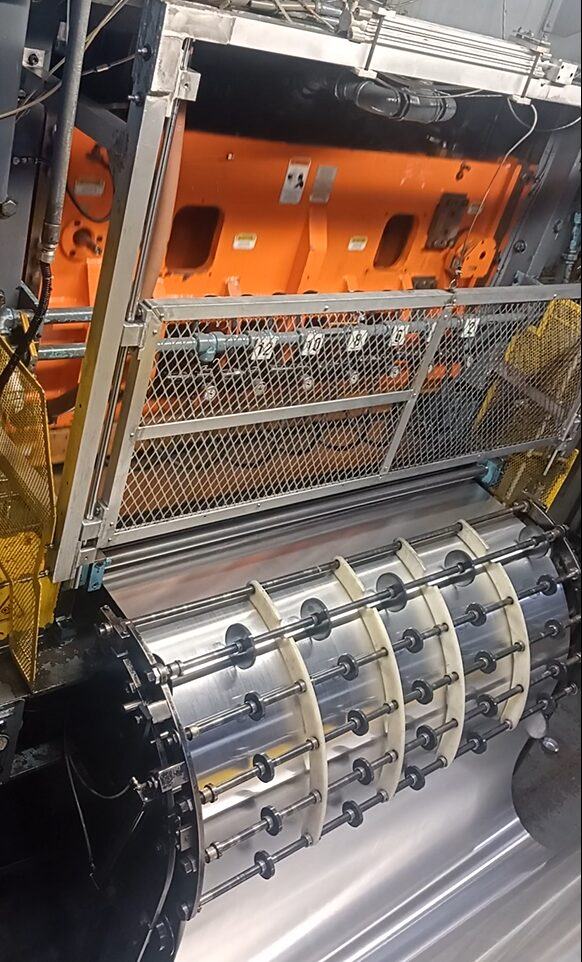
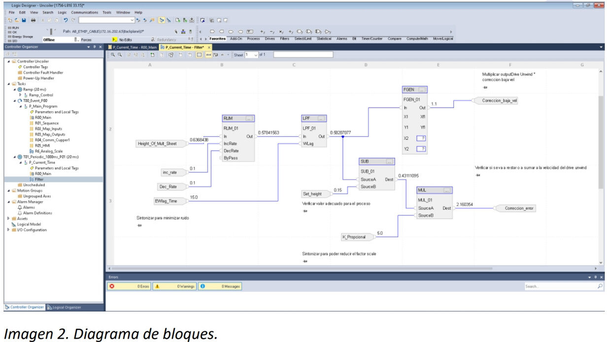

Ball Corporation's Cupper 1 and Uncoiler machines — the 24oz cup-blanking area of an aluminum beverage-can line — ran on an obsolete Modicon PLC and Parker HMI with no viable long-term support path. I migrated both to Allen-Bradley ControlLogix L81 and PanelView Plus 1000, integrated over EtherNet/IP with the line's master PLC.
The Cupper 1 and Uncoiler PLCs communicate with the line's master "Line Control" PLC over EtherNet/IP. The HMI exposes motor status, main/manual drive speed, coil count and fault diagnostics (e.g. "Falla de comunicación con Line Control").

